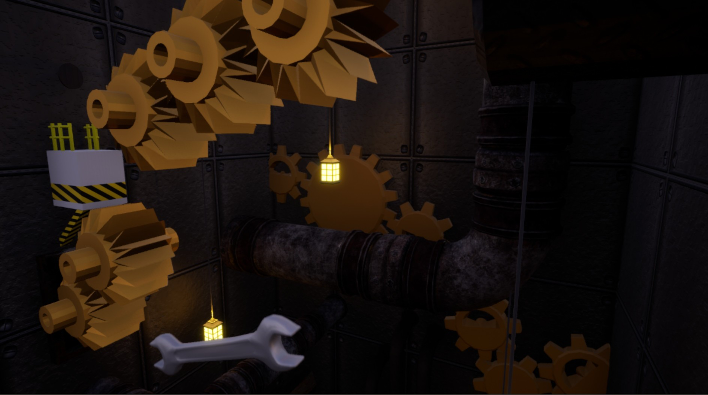
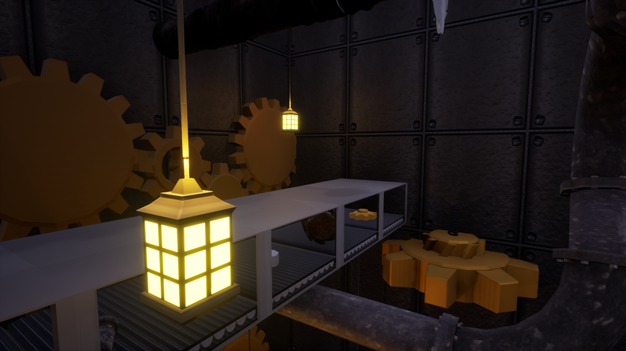
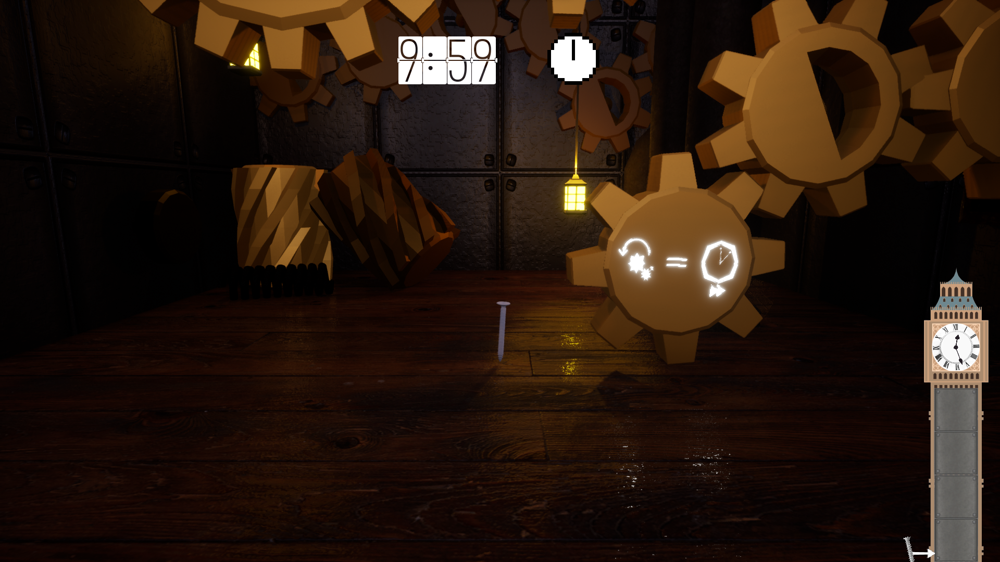

Screw Up!
A Gamejam parkour game
Game Overview
Screw Up! is a vertical parkour game made for the Game Jam : JameGam 30 following the theme Time kills you. As the Big Bony clock tower collapses, make your way to the top to repair it but be careful! Legends say that the gears of this tower can curve time itself!
- Make your way up to the top of the tower before time runs out
- Change the flow of time using the tower's gears
- Dodge the traps of the collapsing tower



My role and reflection
What I did
I developed the parkour gameplay, time-bending mechanic, and the level structure for this Game Jam project.
- I was responsible for the development of the main parkour mechanics, including movement and "checkpoints", designed to restore rewind the tower timer
- I added the mechanic that bends time depending on the gear's rotation speed to make the player feel more in control of their mission
- I built the majority of the game map, placing obstacles and platforms in a way that would force the player to take risks and use the time-bending mechanic
Challenges and lessons
On the conception side, finding a way to make the theme intersting was the biggest challenge. Giving the player control over the flow of time made them a part of this conceprt as a whole, rather than having a classic timer ticking in the background.
On the technical side, balancing the time-bending mechanic and the effect of the gears was the main challenge as the timer was the central point of the game.
This project, as is was my first Game Jam game, taught me how to manage time while a short deadline is approaching.
The game is available for free on Itch.io
Download on Itch.io